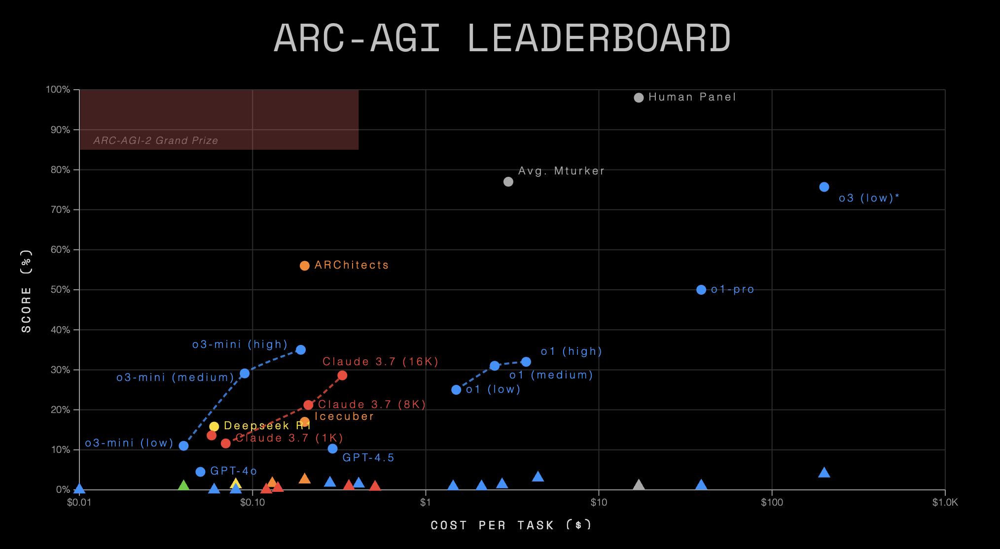

Published: January 4, 2026
Rule one. "Never use a metaphor, simile, or other figure of speech which you are used to seeing in print." — George Orwell
It has become a common occurence of everyday life that about every 3-4 months one's LinkedIn, X, and Bluesky feeds explode with the prophetic messages from the frontiers of 21st century AI - a new wave of benchmark results dropped from the next iteration of your favourite hyperscaler model. There are really two main types of signals I observe: somebody (typically the company itself) boasting about a benchmark result of theirs (either on internal data, famously sometimes even without a y-axis, or on an external benchmark, although external here does by no means imply independent) or because someone is raving about how "they tried it themselves" and were "blown away", "stunned", "stopped in their tracks" (I venture to estimate around 80% of LinkedIn posts make use of one of three of these limited linguistic metaphors).
I reserve a good amount of doubt for the latter category of endorsements. While I believe that may of these are made earnestly and sincerely (and have been made to me by friends whose judgement I respect and value), I have never myself had that same experience despite using LLMs for a good amount of coding (other tasks) and generally being willing to try 0-shotting an entire project before building it piecemeal and through more extensive prompting. Undeniably, ChatGPT 5.2 is better than ChatGPT 3. There also remain a good number of tasks, it still won't satisfactorily do for me, some of which more scale (read: more parameters, more RL, more inference budget) will fix. That to me is the state of the "first-hand" experience for me with LLMs in the area I find them most reliably and appliedly useful, coding.
As someone self-identifying as a Chemist, I'm perhaps unsurprisingly quite partial however to big, statistically sound benchmarks. Before we embark on what I estimate to be roughly the best case against them, let me say this: It's quite easy for me to imagine a world in which independent benchmarking (including the very word (metaphor) of "benchmarking") is not well known to anyone outside a small, specialist community and in which AI performance gains are mostly reported through companies releasing their own results on their own data and tests. Clearly, it's a pretty great achievement that somehow all of the major AI labs somehow feel obliged to evaluate themselves on a whole host of external benchmarks that often are constructed by generally well-meaning researchers. That already beats the standard of evaluation in a lot of other industries (home appliance manufacturers measuring their own energy efficiencies comes to mind), perhaps only exceeded by pharma where it is state regulation that enforces even more rigorous, external evaluations known as clinical trials.
Obviously, there are bad benchmarks out there. I would, until proven otherwise, cluster all internal company benchmarks in this category. I won't be considering those here. There are well-meaning, large, external benchmarking datasets with a statistically rigorous evaluation out there. Again: a relatively high standard that not all industries can claim. Yet, given how much depends on these benchmarks - around 35% of the Dow Jones Industrial Average by one estimate - that we must examine them with corresponding exactitude. After all, the stock price of Miele does not tend to make heavy jumps based on their new efficiency reports.

As I see it, there are 3 main problems besetting even the best of the external benchmarks out there today. There are two sort of related problems or at least open research questions that I'll discuss further below.
This last point actually becomes even more complicated in the age of RL. What prevents the model builder from doing RL on tasks that are at least related to the problem the benchmark is posing. Maybe this doesn't work the first iteration around when nobody has ever seen your benchmark but it would be quite easy to do from then on and the incentives would be there. In a world in which model builders were "overfitting to the benchmark" with RL you would expect first submission to be relatively low and the increment up later on. This, however, is indistinguishable from the underlying models just getting better. I'm not pretending to know the answer to this either but it's reasonable something like this "benchmark busting" is contributing to the slope in these leaderboard graphs.
Is RL bitter-lesson compliant?
Something that often comes to my mind concerning benchmarks and modern RL scaling laws, is the Bitter Lesson by Richard Sutton. In brief, the idea is that a lot of ML work was misguided by trying to impart a lot of clever ideas and specialist understanding that made a model a little bit better for one small use-case (e.g. object recognition or text translation). In fact, we would have been much better of using general-purpose architectures that are not all adapted to a particular problem but training them on a much larger scale. Transformers really solve both object recognition and text translation without the need for any human-designed expertise, specialist understanding, nor clever algorithms needed. Essentially, you're swimming against Moore's law - and swimming against an exponential is pretty painful.
Now I'm actually not so sure how bitter-lesson compliant modern RL is. There are other problems with RL too of course, for one thing the lack of good "games" we can actually run any type of RL on, which motivates the work that many are now doing in constructing better world simulators, physics world models, cell emulators, etc. so that self-play can happen in these environments, translating scalable RL into a new problem domain (e.g. bio). I quite like Dwarkesh's take on this. But another concern from a more philosophical view of things one could have with modern RL is that you specialize models for a very small class of maybe useful and even economically valuable tasks - but unlike the age of parameter scaling (and perhaps even inference time scaling) - we're no longer scaling towards AGI. At best we're scaling towards commercial viability in some domains. (Which expressly is not commercial viability for the hyperscalers who need something pretty close to AGI that replaces a good part of our current work-force to justify their current valuation and capital expenditure).
Does any of this generalize?
In the end this relates to something that Epoch AI (I know I just called them potentially compromised but ...) recently wrote a nice summary about. Essentially, it comes down to the question whether general intelligence comes down to one "deep" capability that unifies all (at least most) tasks of intelligence; or whether most tasks are "contingent", i.e. they are not really related and there is not enough transfer learning and generalizability among them so that you need to train specialist models for each tasks separately. In the worst case, these contingent tasks exist on some kind of pareto frontier where improving on one ability (e.g. coding) negatively impacts your ability on another (e.g. poetry).
In (young) humans interestingly, there is evidence for this "deep" model of intelligence. Where psychologists observed that children good at one task generally have a higher likelihood of being good at other, unrelated tasks as well. This is referred to as the g-factor, which summarizes the positive correlations between cognitive tasks. The g-factor can explain around 40-50% of the IQ scores between individuals.
I personally mostly subscribe to a contingent world model. One reason is laid out by the folks at Epoch AI: firstly, they realized that most of their benchmarks are highly correlated. Secondly, by doing a PCA they conclude that the 2nd principle component (where the first is just "being good at everything", which you could see as a g-factor) of predicting good benchmark performance is how much "Claudiness" your model has. In other worlds, a model which is good at coding, agentic tasks but not so good at vision and also bad at math. Essentially, the priorities Claude shows strongly (at the time of writing). As Greg Burnham at Epoch AI writes:
But the existence of the Claudiness dimension feels to me like a bit of evidence for the “contingent” world. Anthropic has focused on making models that are state-of-the-art at agentic coding. Without additional focused investment, the models turn out not to be exceptional at advanced math. There is surely some generalization across tasks, but perhaps this is a sign of its limits.
I think that is mostly right and I hold a contingent world model to be more congruent with other priors I hold, such as a general no-free-lunch-theorem and "the minust first law of thermodynamics", which posits that information is conserved. Both of which I find at least notionally at odds with the idea that learning on one task yields large, unaccounted for rewards on other tasks. Lastly, it also rhymes with my own experience with these models where I haven't found them to be nearly as impressive in chemistry or biology as for coding.
The question of whether we live in a "deep" or "contingent" world is profoundly relevant to benchmarking too: In a "deep" world where everything depends on essentially an AI's g-factor any benchmark could plausibly swap in for another. In a contingent world you'd better have a benchmark for each task and would spend a lot of time thinking about what capabilities you're not measuring - not least so you steer the work of LLM builders towars these tasks as well.
Benchmarks are hugely important (so is your personal experience with them as limited and biased as it might be) and they deserve attention. They arguably deserve some more scrutiny too. On a more optimistic note, bad benchmarks can be morally good things if you assume that even more out-of-domain, even more rigorous benchmarks would lead to a drop in model performance, which could lead to a downward correction in the markets. This would certainly have (mostly) bad consequences.
← Back to main.